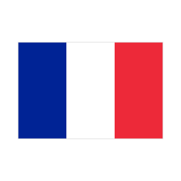
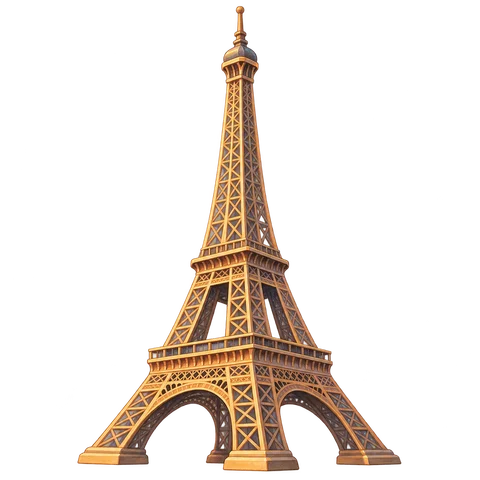

01 · 동물 친구들
30종 · 같은 동물끼리
02 · 맛있는 짝꿍
과일·음식 30종 · 같은 그림끼리
03 · 국기와 랜드마크
국가와 대표 건축물 연결

프랑스
에펠탑04 · 그때와 지금
기존 15쌍 그대로 유지
 촛불
촛불 램프
램프05 · 직업과 도구
15쌍 · 직업에 맞는 도구 연결
새 일러스트: built-in image_gen · 투명 배경 검증 완료 · 국기: 정확한 도형 그래픽
이 페이지는 승인용이며 실제 게임에는 아직 적용하지 않았습니다. 그때와 지금은 기존 파일을 그대로 보여줍니다.